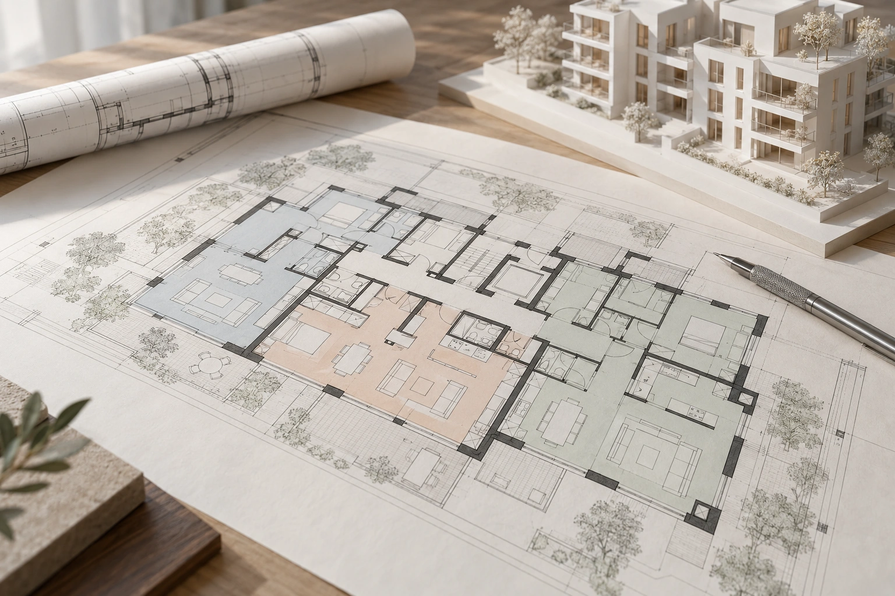
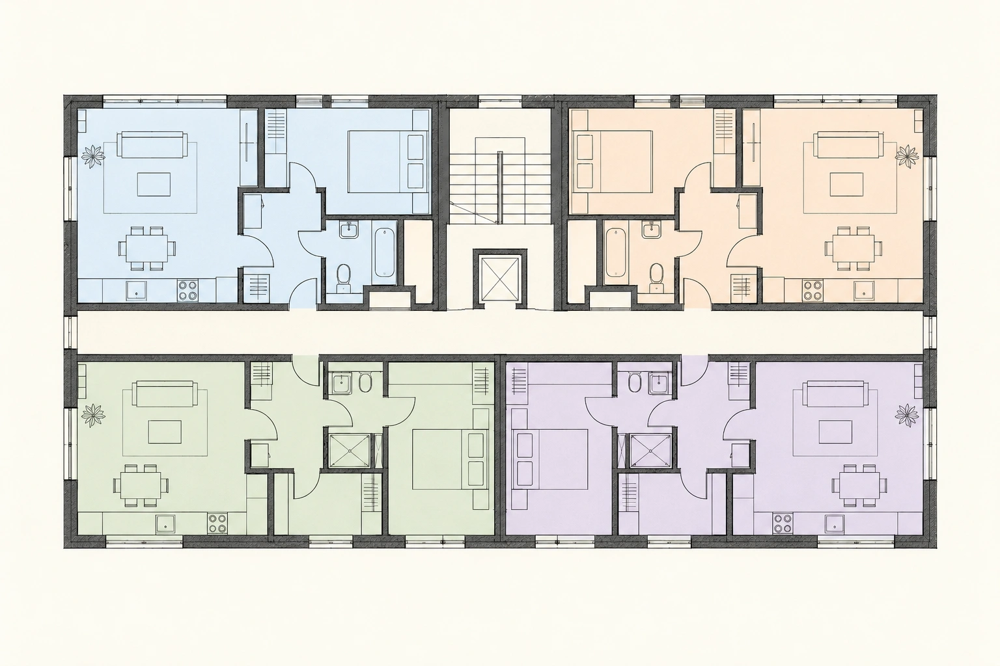
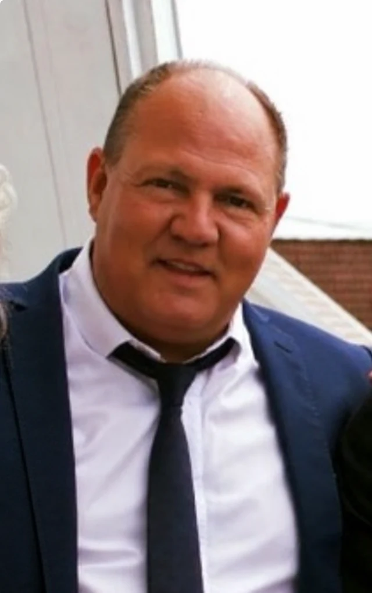

Et godt grunnlag.
Vi begynner med godkjente tegninger, eiendomsopplysninger og en samtale om hva dere vil oppnå. Forutsetningene må være tydelige før løsningene tar form.
- Tegninger
- Godkjent bruk
- Eiendomsforhold
EIENDOMSFAGLIG RÅDGIVNING
Grenser, arealer og rettigheter skal henge sammen. Vi hjelper utbyggere, eiere og sameier med avklaringene som gir et trygt grunnlag videre.
Drøft prosjektet med ossFra tegning til tydelige eierforhold
30års erfaring
◎Tett dialog fra A til Å
⌖Oppdrag i hele Norge
Erfaring fra langvarige samarbeid og konkrete oppdrag.
DETALJENE SKAL STEMME. HELHETEN SKAL FUNGERE.
Bak en god løsning ligger et grundig arbeid. Vi leser tegningene, avklarer bruken og ser hver del av eiendommen i sammenheng.
Vi begynner med godkjente tegninger, eiendomsopplysninger og en samtale om hva dere vil oppnå. Forutsetningene må være tydelige før løsningene tar form.
Boliger, næringsarealer, boder og parkering får en gjennomtenkt plass i helheten. Vi avklarer tilleggsarealer og skiller det den enkelte eier fra det sameiet deler.
Adkomst, fellesfunksjoner og ansvar skal fungere i praksis. Søknad, avtaler og forslag til vedtekter bygger på den samme forståelsen av eiendommen.

Et godt grunnlag.
01 / 05Forenklet illustrasjon. Faktisk arealfordeling og rettigheter avklares for den enkelte eiendom.
EIENDOMSFAGLIG BISTAND FRA A TIL Å
Vi bistår med både nye prosjekter og eksisterende eiendommer. Oppdraget kan være én konkret avklaring eller en sammenhengende prosess fra grunnlag til gjennomføring.
Fra arkitektens grunnlag til tydelig eierskap og en god ramme for sameiet.
Vi ser boliger, næringsarealer, parkering, boder og fellesarealer i sammenheng. Med godkjente tegninger som utgangspunkt utarbeider vi forslag til fordeling, seksjoneringstegninger og søknad.
Vi bistår med nødvendige samtykker og følger opp kommunens behandling i tett dialog med utbygger.
Tegningsgrunnlag · Arealfordeling · Søknad · Oppfølging
Når en eiendom endres, må seksjoneringen følge med. Vi bistår ved endret arealfordeling, sammenslåing eller oppdeling av seksjoner og endringer mellom fellesareal og tilleggsareal.
Vi gjennomgår dokumentasjonen, avklarer behovet for samtykker og utarbeider tegninger og søknadsgrunnlag.
Eksisterende seksjonering · Endringsbehov · Samtykker · Søknad
En god seksjonering bør følges av vedtekter som passer til eiendommen. Vi foreslår bestemmelser om bruk, vedlikehold, ansvar og fellesfunksjoner.
Vi bistår også med organisering og oppdatering av sameiet, slik at dokumentasjonen og den praktiske bruken henger sammen.
Vedtekter · Ansvarsfordeling · Organisering
Vi hjelper med å få kart, dokumentasjon og faktisk bruk til å henge sammen.
Vi bistår når en eiendom skal deles, eller flere eiendommer skal samles. Vi gjennomgår eiendomsforhold, plangrunnlag og aktuelle forutsetninger før søknadsarbeidet starter.
Arbeidet kan omfatte søknader, nabovarsling, erklæringer og oppfølging overfor kommunen.
Mulighetsavklaring · Søknadsgrunnlag · Nabovarsling
Uklare grenser kan gjøre både bruk og endringer vanskelig. Vi samler kart, avtaler og eldre dokumentasjon og hjelper med å avklare hva som må undersøkes videre.
Vi bistår i dialog med berørte eiere og kommunen for å få et tydelig grunnlag for videre avklaringer.
Dokumentgjennomgang · Grenseavklaring · Prosessbistand
Når eiere bytter areal, kan eiendommene få en mer hensiktsmessig form. Vi bistår med å beskrive arealene, avklare partenes behov og forberede grunnlaget for en løsning.
Vi følger opp avtaler og den aktuelle fremgangsmåten for å gjennomføre endringen.
Arealbytte · Avtalegrunnlag · Gjennomføring
Vi forbereder dokumentasjon og hjelper med å avklare hva oppmålingen skal omfatte. Deretter følger vi opp dialogen med kommunen og øvrige berørte parter.
Slik får oppmålingsforretningen et tydelig grunnlag i prosjektets behov og avklarte eiendomsforhold.
Grunnlag · Koordinering · Oppfølging
Over tid kan bruk, grenser og registrerte opplysninger komme i utakt. Vi gjennomgår forholdene og lager en oversikt over hva som bør avklares eller endres.
Aktuelle tiltak kan være grensejustering, avklaring av rettigheter, oppmåling eller oppdatering av dokumentasjon.
Kartlegging · Prioriterte tiltak · Dokumentasjon
Tydelige rammer for bruk, eierskap og samarbeid mellom berørte parter.
Adkomst, parkering, vann, ledninger og annen bruk av eiendom trenger tydelige rammer. Vi bistår med å kartlegge eksisterende rettigheter og beskrive nye ordninger.
Vi hjelper med avtalegrunnlag, bruksordninger og dokumenter for tinglysing, også ved organisering av privat vei.
Rettighetsavklaring · Bruksordninger · Avtaler
Vi hjelper med å gjøre avtalte eiendomsforhold klare for registrering. Det omfatter kontroll av eiendomsopplysninger, dokumentgrunnlag og nødvendige vedlegg.
Vi bistår med innsending og oppfølging, og med å avklare hvilke dokumenter saken krever.
Dokumenter · Signaturer og vedlegg · Registrering
TETT PÅ PROSJEKTET
Dere kjenner prosjektet. Vi bidrar med eiendomsfaglig oversikt, et tydelig arbeidsløp og oppfølging av avklaringene underveis.
Vi avklarer behov, mål og forutsetninger sammen med dere.
Tegninger, kart, avtaler og registrerte opplysninger danner grunnlaget.
Vi konkretiserer arealfordeling, dokumenter og nødvendige avklaringer.
Vi bistår videre i dialog med kommunen, berørte parter og rådgivere.
ERFARING SOM FØLGER PROSJEKTET
Gjennom mange år har vi bistått utbyggere, eiendomsselskaper og sameier. Fra enkeltbygg til hele bydeler tar vi med oss erfaringen inn i hver avklaring.
ET UTVALG AV VÅRE REFERANSER
Bla gjennom et utvalg av prosjektene våre.
Erfaring som gir oversikt.
Oppfølging som skaper trygghet.
LA OSS STARTE MED EN GOD SAMTALE
Fortell oss om eiendommen og hva dere ønsker å få til. Du får direkte kontakt med rådgiveren som følger prosjektet.

Daglig leder / konsulent
Eivind bistår med seksjonering, eiendomsfaglige avklaringer og organisering av sameier. Han følger prosjektet i tett dialog med utbygger, eiere og øvrige rådgivere.
Telefon+47 913 24 677E-posteivind@skajaa.no